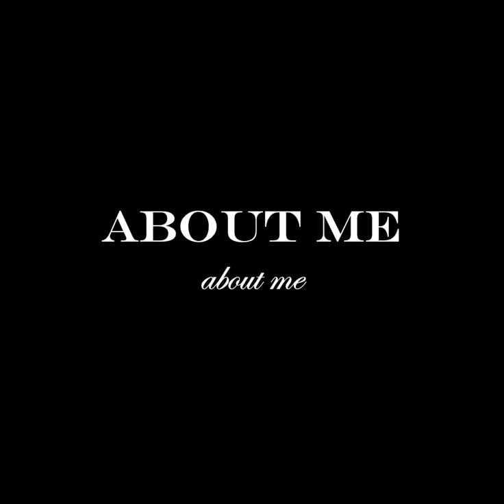
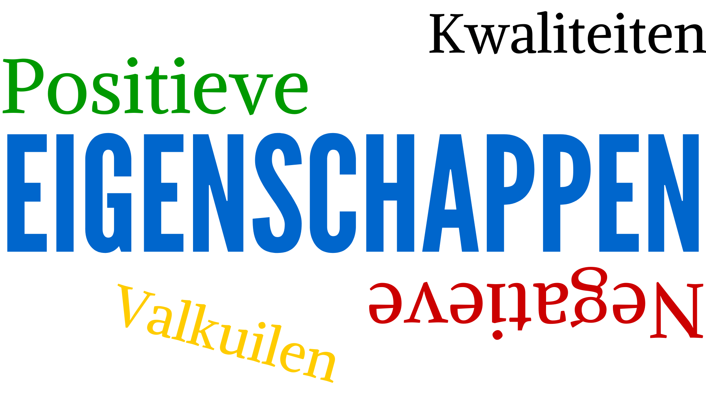

Wie ben ik
Mijn naam is Mirza. Ik ben van Koerdische afkomst. Ik ben geboren in 2010 en ben opgegroeid in Schiedam. Mijn ouders komen uit Turkije en zijn geboren in de stad Konya. Ik heb mavo 4 gedaan en mijn diploma gehaald. Op dit moment doe ik de opleiding Software Development.

Hobby's
Mijn naam is Mirza en mijn hobby's zijn voetballen, voetbal kijken en gamen. Ik vind het ook leuk om in mijn vrije tijd te sporten. In mijn vrije tijd doe ik graag dingen die mij bezig houden en waar ik plezier aan heb.


Karaktereigenschappen
Ik ben rustig, zorgzaam, behulpzaam en leergierig. Ik vind het leuk om anderen te helpen en nieuwe dingen te leren. Ik probeer altijd mijn best te doen en mezelf te verbeteren.
